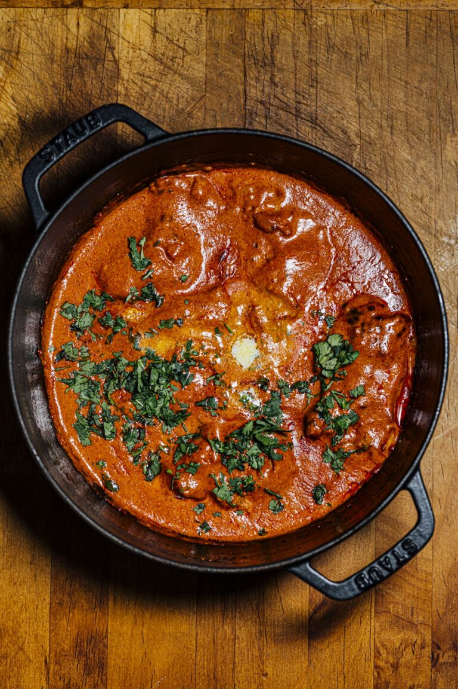

1. Butter Chicken
Ingredients:
2.25 lb/1 kg chicken thighs, skinless, bone-in or
2 lb/910 g chicken thighs, skinless and boneless, cut into 1 in/2.5 cm cubes
For the Marinade½ cup/120 g plain unsweetened Greek yogurt
2 Tbsp fresh lemon or lime juice
1 Tbsp grated garlic
1 Tbsp grated ginger
1 Tbsp garam masala homemade or store-bought
1 tsp ground Kashmiri chilli powder
1 tsp kasoori methi (optional)
½ tsp ground turmeric ½ tsp fine sea salt For the Butter Chicken Sauce ½ stick/55 g unsalted butter1 Tbsp vegetable oil
1 Tbsp Kashmiri chilli powder
2 tsp ground toasted cumin
1 Tbsp grated garlic
1 Tbsp grated ginger
1 tsp garam masala homemade or store-bought
1 green chilli such as jalapeno, serrano, or Bird’s eye
¾ cup/180 g tomato paste
1 cup/240 ml heavy cream
1 Tbsp fresh lemon or lime juice
Fine sea salt
2 Tbsp chopped cilantro, tender stems and leaves
1 Tbsp salted butter for garnish (optional)
Instructions: If using bone-in chicken thighs, make 2 to 3 deep gashes in the chicken; skip this if you use the boneless pieces.
Place all the ingredients for the marinade in a medium bowl or ziptop bag and combine until smooth. Fold in the chicken and make sure the chicken is completely coated with the marinade. Leave in the refrigerator covered for 1 hour, preferably overnight.
When ready to cook, preheat the oven to 400F/200C.
Lay the marinated chicken pieces out on a baking dish or roasting pan. Roast the chicken in the oven until the internal temperature reaches 164F/74C, 30 to 45 minutes (boneless chicken takes about 20 minutes), rotating the dish halfway through during cooking. Transfer the baking dish to the upper rack of the oven, and then broil over high for 2 to 4 minutes, until the chicken starts to char in a few spots. Remove the baking dish from the oven.
At the 20-minute mark of cooking the chicken, start the sauce. Melt the butter in a medium Dutch oven or saucepan over low heat. Once the butter begins to foam, stir in the oil. Add the Kashmiri chilli powder, toasted cumin, garlic, ginger, garam masala, and green chilli. Stir until fragrant, 30 to 45 seconds. Then add the tomato paste and cook until the paste begins to turn light brown, 5 to 6 minutes. Pour in the heavy cream and add the chicken and any liquids left behind in the baking dish. Fold to coat well. Stir in the lemon juice, taste, and season with salt. Bring to a boil over medium-high; the fat should separate from the sauce. Remove from the heat. Garnish with cilantro and salted butter if using. Serve hot or warm with rice or naan. Leftovers will stay good for up to 3 days if stored in an airtight container in the refrigerator.
2. Biryani

Ingredients: 4 tablespoons vegetable oil, divided
4 small potatoes, peeled and halved
2 large onions, finely chopped
2 cloves garlic, minced
1 tablespoon minced fresh ginger root
2 medium tomatoes, peeled and chopped
1 teaspoon salt
1 teaspoon ground cumin
½ teaspoon chili powder
½ teaspoon ground black pepper
½ teaspoon ground turmeric
2 tablespoons plain yogurt
2 tablespoons chopped fresh mint leaves ½ teaspoon ground cardamom 1 (2 inch) piece cinnamon stick 3 pounds boneless, skinless chicken pieces cut into chunks Rice: 1 pound basmati rice 2 ½ tablespoons vegetable oil 1 large onion, diced 5 pods cardamom 3 whole cloves 1 (1 inch) piece cinnamon stick ½ teaspoon ground ginger 1 pinch powdered saffron 4 cups chicken stock 1 ½ teaspoons saltInstructions:
Soak 300g basmati rice in warm water, then wash in cold until the water runs clear.
Heat 25g butter in a saucepan and cook 1 finely sliced large onion with 1 bay leaf, 3 cardamom pods and 1 small cinnamon stick for 10 mins.
Sprinkle in 1 tsp turmeric, then add 4 chicken breasts, cut into large chunks, and 4 tbsp curry paste. Cook until aromatic.
Stir the rice into the pan with 85g raisins, then pour over 850ml chicken stock.
Place a tight-fitting lid on the pan and bring to a hard boil, then lower the heat to a minimum and cook the rice for another 5 mins.
Turn off the heat and leave for 10 mins. Stir well, mixing through 15g chopped coriander. To serve, scatter over the leaves of the remaining 15g coriander and 2 tbsp toasted almonds.
3. Paneer Tikka

Ingredients:
1 tbsp of ginger-garlic paste
1/2 tsp turmeric powder
1 tsp ground cumin
1 tsp ground coriander
1/2 tsp garam masala
1 tsp amchur powder
1 tsp chaat masala
1/2 tsp ground black pepper, powder (optional)
1 tsp ajwain seeds 1 tbsp of oilInstructions:
To begin the dish, line a wire strainer with muslin cloth and pour in the yoghurt. Tie the ends of the muslin together and hang over a bowl for 30 minutes4. Masala Dosa

Ingredients: Rice batter, potatoes, spices.
Instructions: (Add recipe instructions here)